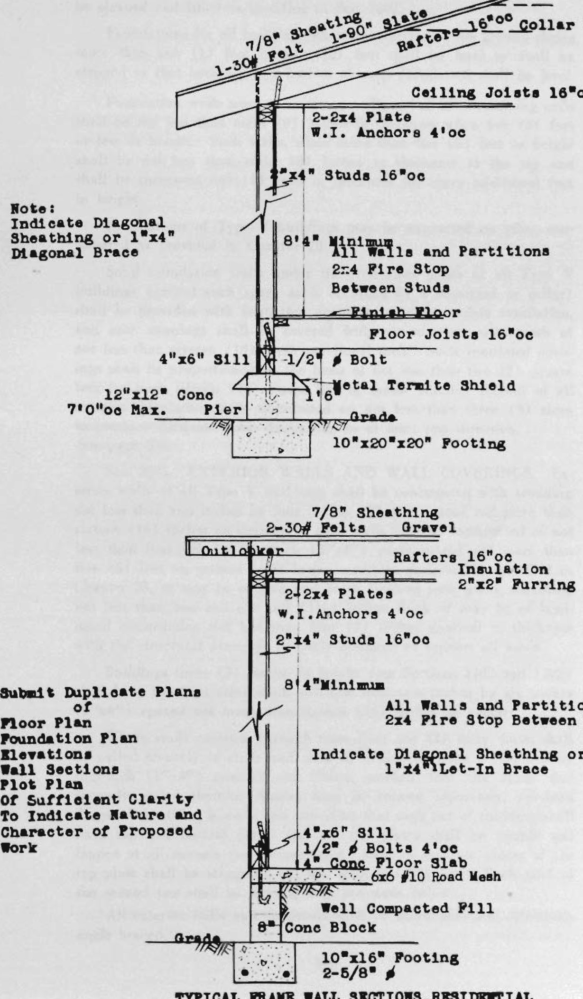
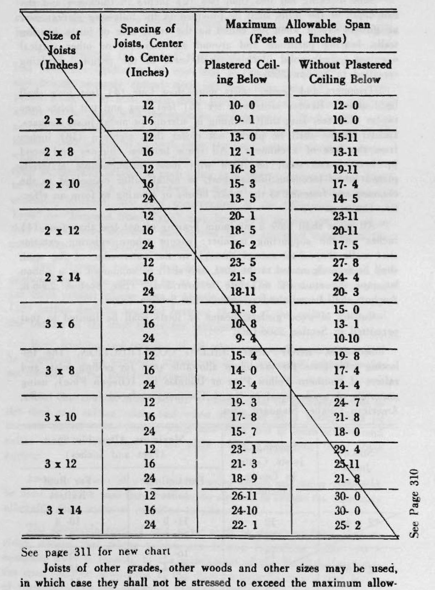

members need not be fireproofed; provided that loading platforms for warehouses, freight depots and similar buildings may be of heavy timber construction with wood floors not less than one and five-eighths (1⅝”) inches thick. Such wood construction shall not be carried through the exterior walls of any Type III buildings.
Except on Group I Occupancies, and except where they do not overhang public property, cornices, marqueises and similar appendages which are a part of Type III buildings shall be constructed of substantial incombustible materials and as specified in Chapter 45.
Sec. 2015. PENTHOUSES AND SKYLIGHTS. Penthouses and other roof structures shall be of not less than one-hour fire-resistive construction as specified in Chapters 36 and 43.
Skylights shall be of no less than one-hour fire-resistive construction, as specified in Chapters 34 and 43.
Sec. 2016. COMBUSTIBLE MATERIALS REGULATED. Wood shall be permitted in a building of Type III construction except where specifically prohibited as specified under Occupancy in Part III or Location in Part IV.
No enclosed air space in any vertical wood framing shall have a dimension greater than seven (7) feet.
Combustible insulating materials may be placed in the partition, floor or roof framing but shall in no way interfere with the fire blocking or fire separations required by this Code.
CHAPTER 21 TYPE IV BUILDINGS (Metal Frame) (See Section 1602 and 1603 for Restrictions in Fire Zones)
Sec. 2101. DEFINITION. “Type IV” or “Type IV Buildings.” The structural framework shall be of steel, iron, masonry or reinforced concrete and the exterior walls and roof shall be of metal or other incombustible materials. Foundations shall be of masonry or reinforced concrete. Partitions and floor construction shall be as specified in this Chapter.
Sec. 2102. HEIGHT ALLOWABLE. Type IV Buildings shall not exceed a height of forty-five (45) feet, except as provided in sections 802, 1102 and 1202. There shall be not more than one (1) story and a mezzanine floor in the height of a Type IV building, except as provided in Section 802. The height of a Type IV building erected on sloping ground, if limited to forty-five (45) feet, may be forty-five (45) feet plus a vertical distance equal to the vertical change of slope along and in the length of any side of such building: but at no point shall such
106
height exceed fifty-five (55) feet above the adjacent finished ground level. Towers, spires and steeples erected as part of the building and not used for habitation or storage may extend not to exceed ten (10) feet above such height limit.
The above allowable heights may be used only when the provisions of Chapter 23 have been complied with.
Sec. 2103. AREA ALLOWABLE. The floor area of a Type IV building shall be limited, as specified under Occupancy in Part III and Location in Part IV.
Sec. 2104. FOUNDATION. Foundation walls and footings shall be of masonry as specified in Chapter 29 or of reinforced concrete as specified in Chapters 26 and 29 or steel grillages as specified in Chapter 27 and shall be designed as specified in Sections 2306 and 2802.
Solid foundation walls under the first floor joist of all Type IV buildings (except such space as is occupied by a basement or cellar) shall be provided with ventilated openings to insure ample ventilation, and such openings shall be covered with non-corrosive wire mesh of not less than sixteen (16) mesh per lineal inch. Such ventilated openings shall be proportioned on the basis of not less than two (2) square feet for each fifteen (15) lineal feet or major fraction thereof of all exterior foundation walls, distributed on not less than three (3) sides to produce adequate cross ventilation in at least one direction.
See Section 2901 for reinforced concrete tie-beams and coping requirements.
Sec. 2105. EXTERIOR WALLS. Exterior walls shall be of galvanized iron of not less than twenty-two (22) gauge, or of other approved non-corrosive metal or material, or other incombustible approved materials. Such exterior wall covering shall be attached to horizontal incombustible supports, spaced not over three (3) feet apart. Such wall covering shall be either bolted or riveted to this framework on a maximum of not less than nine (9) inches on centers, and lead washers shall be used between the bolt or rivet head and metal.
Sec. 2106. PARTITIONS. Interior partitions shall be of metal or other incombustible materials.
Sec. 2107. ENCLOSURE OF VERTICAL OPENINGS. No restrictions.
Sec. 2108. STRUCTURAL FRAMEWORK. The structural framework shall be of steel or iron as specified in Chapter 27, or masonry as specified in Chapters 24 and 29, or of reinforced concrete as specified in Chapter 26.
Sec. 2109. FIREPROOFING STRUCTURAL MEMBERS. Fireproofing of structural members shall not be required.
Sec. 2110. FLOOR CONSTRUCTION. The floors shall be of any type of construction permitted in Type III buildings or may be of wood blocks or of any incombustible material.
Sec. 2111. ROOF CONSTRUCTION. Roof construction shall be
107
entirely of metal or other incombustible materials, provided that wood purlins not less than four (4) inches nominal in least dimension may be used to support metal roof covering, constructed, applied and anchored as specified in Section 4305 (Par. 9).
Roof covering shall be a non-corrosive metal or may be a “Fire-Retardant” roofing as specified in Section 4305.
Sec. 2112. STAIR CONSTRUCTION. Stairs shall be of steel, iron, reinforced concrete, masonry or wood and shall comply with the requirements of Chapter 33.
Sec. 2113. DOORS AND WINDOWS. Openings in exterior walls shall be protected by doors, windows or shutters of metal or of metal frame, metal sash and wire glass; provided that such protection may be omitted when such openings are sixteen (16) feet or more from the opposite side of any street, alley or public place, from an adjoining building or from adjacent property lines.
Sec. 2114. PROJECTIONS FROM THE BUILDING. Porches, cornices, marquises, canopies and all other similar projections from the building shall be of metal or incombustible materials, except that a loading platform may be constructed of wood.
Sec. 2115. PENTHOUSES AND SKYLIGHTS. Penthouses and other roof structures shall be constructed entirely of incombustible materials except that roofs of such structures may be constructed as specified in Section 2111.
Skylights shall be of one-hour fire-resistive construction, as specified in Chapters 34 and 43.
Sec. 2116. COMBUSTIBLE MATERIALS REGULATED. The inner side of walls and under side of roof shall not be ceiled with wood or wood lath and plaster but may be ceiled with any incombustible material.
CHAPTER 22 TYPE V BUILDINGS (Wood Frame)
(See Sections 1602 and 1603 for Restrictions in Fire Zones) (See Section 2511 for Termite and Fungus Control)
Sec. 2201. DEFINITION. “Type V” or “Type V Buildings.” Enclosing walls, interior walls, partitions, floors and roofs shall be of wood or of wood combination with other materials except where prohibited as specified under Occupancy in Part III, or by Fire Zones as specified in Chapter 16. Any building which cannot be classed as a Type I, II, III or IV building shall be considered as Type V.
Sec. 2202. HEIGHT ALLOWABLE. Type V Buildings shall not exceed a height of thirty-eight (38) feet in which height there shall be not more than two (2) stories and attic; provided, that the height of a building erected on sloping ground may be thirty-five (35) feet plus
108
a vertical distance equal to the vertical change in slope along and in the length of any side of such building but in no case shall such height exceed forty-five (45) feet above the adjacent finished ground level; provided, further, that spires, towers or steeples erected as a part of such building and not used for habitation or storage may extend not to exceed ten (10) feet above such height limit.
Sec. 2203. AREA ALLOWABLE. The maximum floor area allowable for a Type V building shall in no case exceed that specified under Occupancy in Part III, or Location in Part IV.
Sec. 2204. FOUNDATIONS. All exterior walls of Type V. buildings shall be supported on continuous approved masonry or reinforced concrete walls, or reinforced piers and shall be of sufficient size to safely support the loads imposed as determined from the character of the soil and the loading. For Group I Occupancies of not more than two (2) stories in height, reinforced concrete piers shall be not less than twelve by twelve (12”x12”) inches, and such reinforced concrete piers shall be required at all corners, and when twenty-four (24) inches or higher above footing shall be reinforced with not less than four (4) three-eighths (3/8) inch bars of sufficient length to penetrate into footings not less than six (6) inches and hooked. If piers are constructed of special hollow concrete masonry units (as specified in Section 2606) they shall be of a size not less than twelve by sixteen (12”x16”) inches and grouted with cement mortar or concrete and shall be reinforced as specified above for reinforced concrete piers. Solid masonry piers shall be not less than twelve by twelve (12”x12”) inches and the core shall be grouted as required above for hollow masonry units, and shall require the same reinforcing as specified above for reinforced concrete piers. Piers shall be not less than seven (7) feet on centers for one (1) story buildings and five (5) feet on centers for two (2) story buildings, with a wall supporting sill of not less than four by six (4”x6”) inches which shall be bolted as follows: To solid masonry walls with not less than one-half (1/2) inch bolts embedded at least seven (7) inches into the masonry and spread not more than six (6) feet apart; to piers with not less than two (2) one-half (1/2) inch bolts embedded at least seven (7) inches into each pier. Wood sills to be of quality and protected as specified in Sections 2505, 2506 and 2511.
See page 310
MINIMUM ALLOWABLE DIMENSIONS
Foundation Walls and Footings—Private Residence Construction
| Continuous Walls | Footings | |
|---|---|---|
| Top Width | Footing Width | Minimum Thickness |
| 6” Reinforced Concrete | 14” | 10” |
| 8” Masonry Units | 16” | 10” |
Note: All footings to have not less than two (2) five-eighths (5/8”) inch bars. The above dimensions are minimum requirements and shall be increased in accordance with Section 2802 whenever conditions of loading or character of soil necessitate an increase.
109
BUILDING DIVISION, CITY OF MIAMI, FLA.

Note: Indicate Diagonal Sheathing or 1”x4” Diagonal Brace
7/8” Sheathing 1-30# Felt 1-90” Slate Rafters 16”oc Collar Ties 4’oc Ceiling Joists 16”oc 2-2x4 Plate W.I. Anchors 4’oc 2”x4” Studs 16”oc 8’4” Minimum All Walls and Partitions 2x4 Fire Stop Between Studs Finish Floor Floor Joists 16”oc 4”x6” Sill 1/2” ⌀ Bolt 12”x12” Conc 7’0”oc Max. Pier Metal Termite Shield Grade 10”x20”x20” Footing
7/8” Sheathing 2-30# Felts Gravel Outlooker Rafters 16”oc Insulation 2”x2” Furring 16” O.C. 2-2x4 Plates W.I. Anchors 4’oc 2”x4” Studs 16”oc 8’4” Minimum All Walls and Partitions 2x4 Fire Stop Between Studs Indicate Diagonal Sheathing or 1”x4” Let-In Brace 4”x6” Sill 1/2” ⌀ Bolts 4’oc 4” Conc Floor Slab 6x6 #10 Road Mesh Well Compacted Fill 8” Conc Block Grade 10”x16” Footing 2-5/8” ⌀
Submit Duplicate Plans of Floor Plan Foundation Plan Elevations Wall Sections Plot Plan Of Sufficient Clarity To Indicate Nature and Character of Proposed Work
TYPICAL FRAME WALL SECTIONS—RESIDENTIAL Scale [—] = 1’
109A
Sec. 2204. FOUNDATIONS. Wherever pot holes exist they shall be cleaned and filled as specified in Sec. 2802.
Foundations for all buildings where the surface of the ground slopes more than one (1) foot in ten (10) feet shall be level or shall be stepped so that both top and bottom of such foundation shall be level.
Foundation walls used as retaining walls and all other retaining walls shall be not less than eight (8) inches in thickness when five (5) feet or less in height. Such walls, when more than five (5) feet in height shall be not less than eight (8) inches in thickness at the top and shall be increased one (1) inch in thickness for every additional foot in height.
Foundations of Type V buildings may be supported on piles, constructed as provided in Chapter 28.
Solid foundation walls under the first floor joists of all Type V buildings (except such space as is occupied by a basement or cellar) shall be provided with ventilated openings to insure ample ventilation, and such openings shall be covered with non-corrosive wire mesh of not less than sixteen (16) mesh per lineal inch. Such ventilated openings shall be proportioned on the basis of not less than two (2) square feet for each fifteen (15) lineal feet or major fraction thereof of all exterior foundation walls distributed on not less than three (3) sides to produce adequate cross-ventilation, in at least one direction. See page 310
Sec. 2205. EXTERIOR WALLS AND WALL COVERINGS. Exterior walls of all Type V buildings shall be constructed with studding not less than two inches by four inches (2”x4”) spaced not more than sixteen (16) inches on centers, or such walls may be constructed of not less than four-inch by four-inch (4”x4”) posts spaced not more than five (5) feet on centers or of larger members designed as specified in Chapter 25, or may be of post and beam framing with plank sheathing not less than one and one-half (1½) inches thick or may be of laminated construction not less than four (4) inches nominal in thickness with the structural assembly properly designed to support all loads.
Buildings three (3) stories in height (see Sections 1102 and 1202) shall have the first story studs not less than two inches by six inches (2”x6”) spaced not more than sixteen (16) inches on centers.
Where studs continue through more than one (1) story, joists shall be nailed securely to studs and shall be supported upon a one-inch by four-inch (1”x4”) nominal size ribbon notched into the studs and securely nailed thereto. Stories may be framed separately, provided diagonal sheathing is used, and providing that each tier of studding shall have top and bottom plates and the top plates shall be double and lapped at all corners and intersections. Laps in separate pieces of the top plate shall be staggered not less than two (2) feet. Each stud of the second tier shall be directly over the studs below.
All exterior walls and partitions shall be thoroughly and effectively angle braced.
110
Maximum allowable story height of two by four-inch (2”x4”) stud framing shall be twelve (12) feet and of two-inch by six-inch (2”x6”) stud framing shall be sixteen (16) feet unless the wall is supported laterally by adequate framing in a horizontal direction, perpendicular to the direction of the stud walls and shall be braced with not less than one inch by four inch (1”x4”) nominal size ribbon notched into the outside face of the studs extending from sill or plate to corner posts and spiked on each stud or post with not less than two (2) 8d nails.
All walls shall be effectively fire stopped at the floor and ceiling and at the spring of cove in a coved ceiling. Fire stops shall also be placed between the floor and the ceiling in such a manner that there shall be no concealed air space with a dimension greater than seven (7) feet. Fire stopping shall consist of not less than two (2) inch nominal size material and shall be the full thickness of the stud wall. Where stories are not framed separately, fire stopping shall be placed behind the ribbon at the ceiling line and at the top of joists at the floor line. Such fire stopping shall be two (2) inches nominal size in thickness and the full width of the stud. Stud framing on exterior masonry or concrete walls above the first floor shall be anchored as required in Section 2506.
All openings four (4) feet wide or less shall be provided with double-headers not less than two (2) inches nominal size in thickness placed on edge, and such headers shall have two (2) inches nominal size solid bearing to the floor or bottom plate. All openings more than four (4) feet wide shall be trussed or provided with lintels which shall have not less than two (2) inch nominal size solid bearing to the floor or bottom plate. (See Section 2507, paragraph (g).)
Underpinning shall be not less in size than the studding of the story above; provided, that all underpinning exceeding four (4) feet in height shall be not less in size than the studding required for an additional story. All such underpinning shall be effectively braced.
FOUNDATION VENTS. Solid foundation walls under the first floor joists of all Type V buildings (except such space as is occupied by a basement or cellar) shall be provided with ventilated openings to insure ample ventilation, and such openings shall be covered with non-corrosive wire mesh of not less than sixteen (16) mesh per lineal inch. Such ventilated openings shall be proportioned on the basis of not less than two (2) square feet for each fifteen (15) lineal feet or major fraction thereof of all exterior foundation walls distributed on not less than three (3) sides to produce adequate cross-ventilation in at least one direction.
SILLS. An approved solid wood sill of quality hereinafter specified in this Section of not less than four (4) inches nominal thickness and not less than six (6) inches nominal width and in no case less in width than the wall framing supported thereon, shall be placed under all walls or partitions that rest on masonry or reinforced concrete foundations.
111
Lumber specified in the above locations shall have physical properties equal to eighty-five (85) per cent heart Long Leaf Southern Yellow Pine or No. 1 Common Tidewater Red Cypress, or No. 1 Common all-heart Port Orford Cedar, Western Red Cedar or Cypress, the heart Common grade of Redwood, or the No. 1 Common grade of any lumber which is treated with an approved preservative by any method that will thoroughly impregnate the wood through the sap to the heart. Brush treatment is not approved, except that it is required on end cuts and all other cuts in timber treated as specified above.
ISOLATION. All sills or partitions that rest on masonry or reinforced concrete walls or piers must have the top of the masonry wall or pier covered with eighty-five (85) pound slate covered roofing or twenty-four (24) gauge galvanized iron or other approved material before the sill is placed. Sill to be anchored as required in Sections 2204 and 2506.
All Type V buildings three (3) stories in height (See Sections 1102 and 1202) shall have the exterior walls thoroughly covered with a solid diagonal sheathing of wood not less than five-eighths (5/8) of an inch thick, or approved fiber-board not less than seven-sixteenths (7/16) of an inch thick or approved incombustible sheathing not less than one-half (1/2) inch thick.
All exterior walls shall be covered on the outside with weatherboarding, shingles, stucco, masonry veneer or galvanized metal as specified in this Section or by other similar approved materials.
The minimum requirements for wall coverings for Type V buildings are as specified in parts (a), (b), (c), (d) and (e) of this Section.
Sec. 2205. WEATHERBOARDING. (a) Weatherboarding, when in place, shall have an average thickness of not less than five-eighths (5/8) of an inch and a minimum thickness of not less than three-eighths (3/8) of an inch. Such weatherboarding shall be securely nailed to the studding with not less than two nails to each stud in each piece of such weatherboarding. Horizontal joints in the weatherboarding shall be tongued and grooved or shiplapped joints, or such weatherboarding shall be laid shingle fashion and lapped not less than one-half (1/2) inch. Siding patterns known as rustic, drop siding or shiplap shall have an average thickness in place of not less than nineteen thirty-seconds (19/32) of an inch and a minimum thickness of not less than three-eighths (3/8) of an inch. Bevel siding shall have a minimum thickness measured at the butt section of not less than twenty-thirty-seconds (20/32) of an inch and a tip thickness of not less than one-quarter (1/4) inch. Fourteen thirty-seconds (14/32) thickness shall be permissible in width not greater than six (6) inches and limited to one (1) story and fourteen (14) feet in height. (Recommended but not mandatory: Studs shall be covered on the outside face with one layer of two (2) ply waterproofed building paper applied and tacked shingle fashion with joints horizontal; horizontal joints of the paper shall be lapped at least two (2) inches and perpendicular joints at least six (6) inches.)
112
(b) SHINGLES OR SHAKES. Shingles or Shakes may be used for the exterior wall covering when applied as follows: The outside face of the studs shall be first sheathed with board of uniform thickness not less than twenty-five thirty-seconds (25/32) of an inch thick and such sheathing shall be securely nailed to the studding with not less than two (2) eight (8) penny common nails to each stud in each piece of sheathing eight (8) inches or less in width and not less than three (3) such nails when such sheathing boards exceed eight (8) inches in width. Shingles or shakes shall be nailed securely to the wall sheathing with at least two nails in each piece. (Recommended but not mandatory: Waterproofed building paper as noted in sub-Section (a) above.)
(c) Stucco. Stucco shall be applied over solid diagonal sheathing or approved similar backing. Stucco shall consist of NOT LESS THAN two (2) coats.
In all cases except in back plastered construction a substantial waterproofed paper or asphalt saturated felt weighing not less than fourteen (14) pounds per one hundred (100) square feet or any substantial waterproofed paper which successfully passes a sixty (60) pound Mullen test shall be applied weatherboard fashion directly over the studs or sheathing. Horizontal joints shall be lapped not less than two (2) inches and vertical joints not less than six (6) inches.
In all cases a galvanized metal reinforcement shall be used of either expanded metal or wire fabric as follows:
(1) Expanded galvanized metal cut from sheets not less than twenty (20) U. S. gauge in thickness with mesh not less than three-fourths (3/4) of an inch in least dimension nor more than four (4) inches in greatest dimension and not exceeding six (6) square inches in area; the fabric shall weigh not less than one and eight-tenths (1.8) pounds per square yard.
(2) Wire fabric composed of wires not smaller than shown in the following table and with no openings or mesh therein less than three-fourths (3/4) of an inch nor greater than two (2) inches. The minimum allowable gauge of the wire for the various meshes shall be as follows:
For openings not exceeding 1 inch—18 W. & M. Gauge. For openings not exceeding 2 inches—16 W. & M. Gauge
(3) Expanded galvanized metal lath weighing not less than three (3) pounds per square yard.
(4) Electrically welded or hot dipped galvanized after weaving, wire of sixteen (16) W. & M. gauge with openings not exceeding two (2) inches in greatest dimensions and not exceeding four (4) square inches in area.
Galvanized metal reinforcing shall be securely fixed in place, using a furring device that will positively fur the metal reinforcing at least one-fourth (1/4) inch from the studs, sheathing or other backing. No form of strip or metal rods shall be used for furring which will serve to weaken the stucco. Metal reinforcing shall be secured with not less
113
than four penny (4d) nails driven to at least three-fourth (3/4) inch penetration in the studs or sheathing. Nails and furring devices shall be not more than six (6) inches apart vertically. Horizontal and vertical joints of the metal reinforcing shall be lapped at least one full mesh. All horizontal joints between studding shall have not less than one tie with number eighteen (No. 18) annealed tie wire except when building is sheathed and all vertical joints shall be made at the studs when attached directly thereto. All lath shall be applied with one and one-half (1 1/2) inch self-furring nails, galvanized, unless self-furring lath is used.
Stucco shall consist of two (2) coats: (1) First or scratch coat shall completely cover the metal lath or reinforcing. (2) Finish coat. The total thickness of the two coats shall be not less than seven-eighths (7/8) of an inch thick at every point.
The stucco shall be of Portland cement and sand as specified in Chapter 26, with an addition of not more than ten (10) per cent of hydrated lime or similar material based on volume of cement in the scratch coat and with not more than twenty (20%) per cent of hydrated lime or similar material based on volume of cement in the finish coat.
The first or scratch coat of stucco shall be shoved thoroughly through the galvanized metal reinforcing until all space between the metal and the backing is filled solidly and fully covering lath and reinforcing; and such coat shall be kept thoroughly moist during the first twenty-four (24) hours after being applied. The first or scratch coat shall be kept thoroughly moist for a period of not less than twenty-four (24) hours before applying finishing coat, and shall be thoroughly wetted immediately prior to applying the finish coat in order to provide a proper bond.
The above galvanized metal lath requirements shall not apply to stucco placed on masonry backing, but metal lath shall overlap intersecting masonry at least two (2) inches. Before applying stucco on any masonry backing such backing shall be thoroughly washed and cleaned.
Gunite, as defined in Chapter 26, shall be applied in not less than two (2) coats, and shall be reinforced as specified for “Stucco” in this section. Gunite shall be not less than five-eighths (5/8”) of an inch in thickness.
(d) Masonry Veneer. In all cases before applying masonry veneer a substantial waterproofed paper or asphalt saturated felt weighing not less than fourteen (14) pounds per one hundred (100) square feet shall be applied weatherboard fashion directly over the solid diagonal sheathing as specified for “Stucco” under part (c) of this Section.
Masonry veneer shall not be less than three and three-quarters (3 3/4”) inches thick. The masonry shall be bonded to the solid diagonal sheathing by means of not less than twenty-four (24) gauge galvanized iron strips securely nailed to the sheathing, and spaced not more than sixteen (16) inches apart horizontally and twelve (12) inches apart
114
vertically. Such veneer shall not be permitted above two (2) stories, except for gables. The veneer shall be supported directly on the foundation.
(e) Galvanized iron not less than twenty-two (22) gauge may be applied over diagonal solid sheathing with approved galvanized bolts and washers as specified in Section 2105, spaced not more than twelve (12) inches on center horizontally and not more than two feet (2’) vertically.
Sec. 2206. INTERIOR PARTITIONS. All interior partitions shall be constructed, framed and fire stopped as required for exterior walls, as specified in Section 2205, except that interior non-bearing partitions may have a single top plate, and except that where non-bearing partitions are approximately parallel and not more than four (4) feet apart, two inch by three inch (2”x3”) studs sixteen (16) inches on centers, may be used.
Sec. 2207. FLOOR CONSTRUCTION. Girders supporting only first floor joists in residence buildings shall be solid and not less than four inches by six inches (4”x6”) nominal size (placed on edge) for spans not exceeding those specified in Section 2204.
The following table gives the maximum allowable spans for floor joists for Southern Yellow Pine, or Douglas fir (Oregon pine) using materials of grade equal to No. 1 Common, surfaced four sides, American Lumber Standard sizes and based on a uniform distributed live load of forty (40) pounds per square foot.
See page 310 for new chart
115
| Size of Joists (Inches) | Spacing of Joists, Center to Center (Inches) | Maximum Allowable Span (Feet and Inches) | |
|---|---|---|---|
| Plastered Ceiling Below | Without Plastered Ceiling Below | ||
| 2 x 6 | 12 | 10- 0 | 12- 0 |
| 16 | 9- 1 | 10- 0 | |
| 2 x 8 | 12 | 13- 0 | 15-11 |
| 16 | 12 -1 | 13-11 | |
| 2 x 10 | 12 | 16- 8 | 19-11 |
| 16 | 15- 3 | 17- 4 | |
| 24 | 13- 5 | 14- 5 | |
| 2 x 12 | 12 | 20- 1 | 23-11 |
| 16 | 18- 5 | 20-11 | |
| 24 | 16- 2 | 17- 5 | |
| 2 x 14 | 12 | 23- 5 | 27- 8 |
| 16 | 21- 5 | 24- 4 | |
| 24 | 18-11 | 20- 3 | |
| 3 x 6 | 12 | 11- 8 | 15- 0 |
| 16 | 10- 8 | 13- 1 | |
| 24 | 9- 4 | 10-10 | |
| 3 x 8 | 12 | 15- 4 | 19- 8 |
| 16 | 14- 0 | 17- 4 | |
| 24 | 12- 4 | 14- 4 | |
| 3 x 10 | 12 | 19- 3 | 24- 7 |
| 16 | 17- 8 | 21- 8 | |
| 24 | 15- 7 | 18- 0 | |
| 3 x 12 | 12 | 23- 1 | 29- 4 |
| 16 | 21- 3 | 25-11 | |
| 24 | 18- 9 | 21- 8 | |
| 3 x 14 | 12 | 26-11 | 30- 0 |
| 16 | 24-10 | 30- 0 | |
| 24 | 22- 1 | 25- 2 |
See Page 310
See page 311 for new chart
Joists of other grades, other woods and other sizes may be used, in which case they shall not be stressed to exceed the maximum allowable fiber stress as specified in Chapter 25.
Floor joists shall have a clearance of not less than eighteen (18) inches between the bottom of the joists and the surface of the ground underneath. (See Section 2511.)
Joists under bearing partitions shall be installed as specified in Section 2506-(j). All joists, beams and girders shall be framed away at least two (2) inches from all flues and chimneys and at least four (4) inches from the back of any fireplace. All wood floor joists having a span of more than six (6’) feet shall have bridging as specified in Section 2506-(k).
116

Solid backing not less than two (2) inches in thickness and the full depth of the joists shall be provided in the following places: over all girders except when not ceiled on the under side of joists, bearing walls, bearing partitions and around all stairways or other vertical openings. Such solid blocking shall serve as the required bridging specified in Section 2506-(k).
Trimmers and header joists more than four (4) feet long shall be doubled. Header joists over six (6) feet long and tail joists over twelve (12) feet long shall be hung in stirrups or metal joists hangars. Header beams shall be placed not closer than eighteen (18) inches from the face of a chimney. All space between chimney and wood joists or beams shall be filled with loose incombustible materials placed in an incombustible support, or metal collar connected to the chimney and fastened to the joists, beams or flooring to form an effective fire stop.
All joists shall have a minimum bearing of not less than four (4) inches on the supporting member; except where entering exterior stud walls they shall extend through to the outer edge of the stud, shall be securely nailed to the stud, and shall be supported on a ribbon let into the studs if no plate is provided. (See Section 2506-h. Anchors shall be required as specified in Section 2506-f).
Cutting of wood girders, beams or joists shall be limited to that permitted in Section 2506-(m).
Sec. 2208. ROOF AND CEILING CONSTRUCTION. The following table gives the maximum allowable span for ceiling joists and rafters of Southern Yellow Pine or Douglas Fir (Oregon Pine), using materials of grade equal to No. 1 Common, surfaced four (4) sides, American Lumber Standard sizes.
| Size of Joists (Inches) | Spacing of Joists, Center to Center (Inches) | Maximum Allowable Span (Feet and Inches) For Ceiling Joists | Maximum Allowable Span (Feet and Inches) For Roof Rafters |
|---|---|---|---|
| *2 x 4 | 12 | 11- 0 | 10- 4 |
| 16 | 10- 0 | 9- 0 | |
| 2 x 6 | 12 | 16- 7 | 15- 8 |
| 16 | 15- 4 | 13- 9 | |
| 24 | 13- 8 | 11- 5 | |
| 2 x 8 | 12 | 21- 8 | 20- 8 |
| 16 | 20- 2 | 18- 2 | |
| 24 | 18- 0 | 15- 1 | |
| 2 x 10 | 12 | 26-10 | 25- 9 |
| 16 | 25- 0 | 22- 9 | |
| 24 | 22- 6 | 18-10 |
*Note: Limited to one (1) story buildings of Group I Occupancy See page 310 for new chart
117
and shall be used only for ceiling joists and/or rafters when the roof framing is designed for and is covered with roofings of light weight coverings, such as wood shingles, asphalt composition and other similar light types.
Roof framing for pitched type roofs shall be anchored by not less than the equivalent of one inch by six inch (1”x6”) nominal size boards securely spiked with not less than two (2) eight (8) penny nails to at least each third (3rd) rafter at a point near the center of the span, with the opposite end securely spiked in like manner to the ceiling joist or partition immediately underneath; such bracing shall be placed on each slope (or rise) between plate of exterior walls and the ridge; in addition to the above anchorage, each rafter shall be laterally braced to each other at a point underneath the ridge, in order to form a brace known as the “A” Type or “Collar Beam,” provided, however, that roof construction of the “Exposed Cathedral Type” or “Exposed Shed Type” may have such bracing omitted when they are securely anchored and braced in an approved manner to the satisfaction of the Building Inspector.
Roof framing for the flat deck type roof construction shall be anchored in a like manner by at least two (2) braces evenly spaced (at third points) of the span. An air space of not less than eighteen (18) inches shall be required between the top of the ceiling joists and the bottom of the roof rafter for ventilation.
Roof framing and trussing of all other type roof construction shall be anchored in an approved manner or by an approved method to the satisfaction of the Building Inspector.
Roof joists when supported on a ribbon shall be securely nailed to the stud and ceiling joist; and when supported on a plate, shall be securely nailed to the ceiling joists and plate and at least each second rafter shall be anchored to the plate with an approved metal strap anchor.
Joists or rafters of other grades, other woods and other sizes may be used, in which case they shall not be stressed to exceed the maximum allowable fiber stress as specified in Chapter 25.
The allowable span of roof rafter shall be measured from plate to ridge, except that where rafters are braced to ceiling joists and a complete truss is formed, to the satisfaction of the Building Inspector, the span shall be considered as the distance between intersecting points of trussing, when the allowable stresses are not exceeded.
Roof spaces shall be subdivided by a tightly fitted partition of matched wood or approved incombustible materials extending from the ceiling to the roof sheathing, so located as to subdivide this space into areas not exceeding twenty-five hundred (2500) square feet. All openings in such partitions shall have self-closing doors or equally effective devices to provide effective resistance to the passage of flames and gases.
Sec. 2209. ROOF COVERING. Roof covering shall be “fire re-
118
tardant” roofing as specified in Section 4305, as required for Type V buildings based on occupation as defined in Part III of this Code, provided the requirements of Chapter 16 for types of construction in Fire Zone are complied with; and provided further that dwellings as defined in Chapter 14 may be covered by “ordinary” roofing. Wherever a composition roofing is used the roof construction shall be solidly sheathed in wood, sheathing to be not less than twenty-five thirty-seconds (25/32) of an inch thick, provided, however, stripping will be permitted under wood shingles.
Stripping to be not less than one by four (1x4”) inch nominal size, set not more than eight (8) inches on center and nailed with not less than two eight-penny nails to each supporting rafter.
Sec. 2210. ENCLOSURE OF VERTICAL OPENINGS. Except for dwellings under Group I Occupancy, enclosure walls for elevator shafts, vent shafts, stair wells and similar vertical openings through a building shall be not less than one-hour fire-resistive construction as specified in Chapter 30 and 43 and where required under Occupancy in Part III, except that chute and dumb-waiter shafts with a cross-sectional area of not more than four (4) square feet may be lined with not less than one-fourth (1/4) inch asbestos covered with not less than twenty-six (26) gauge sheet metal with all joints in such sheet metal lock-lapped. All openings into any such vertical enclosure shall be closed with a slab wood door not less than one and three-eighths (1 3/8) inches thick at all points, or doors of equivalent or greater fire resistance, all so hinged and hung as to be gravity self-closing.
Sec. 2211. GENERAL. Other parts of Type V buildings may be constructed of wood, or shall be constructed of approved combustible materials, and all such wood construction shall be as specified in Chapter 25. The carrying capacity of all members shall be calculated by the accepted principles of mechanics. The actual dimensions of timbers shall be used and not the nominal sizes in computations for stress and determination of size.
Combustible insulating materials may be placed in partitions, floors or roof framing, but shall in no way interfere with the fire blocking or fire separations required by this Code.
Sec. 2212. ATTACHED GARAGES. When a private garage is located underneath or attached to a Group I Building, the following regulations as to its construction shall be rigidly observed:
The ceiling construction above the garage, when it is located beneath the roof when the garage is attached, shall be unpierced and shall have a fire-resistance of one (1) hour, as specified in Chapter 43. The floor may be of earth fill, or any incombustible material.
Walls and partitions of the garage portions shall be one (1) hour fire-resistive construction, as specified in Chapter 43.
Openings into the garage shall be restricted to a single doorway.
119
such openings shall be protected by a solid slab wood door, not less than one and three-eighths (”) inches thick at all points, a metal-covered door, or other closure of equivalent or greater fire-resistance, all mounted so as to be gravity closing, or with spring hinges or door closers. No glass shall be permitted in such door.
GARAGE VENTILATION. Private garages which are constructed in conjunction with any Group H or I buildings and which have openings into such buildings shall be equipped with fixed levered or screened openings or exhaust ventilation and with exhaust openings located within six (6) feet of the floor. The clear area of the levered openings or the openings into the exhaust ducts shall be not less than sixty (60) square inches per car stored in such private garage. Under no circumstance shall a private garage have any opening into a living or sleeping room.
Sec. 2213. Except in dwellings, all windows above the third floor line, where window stools are less than three (3) feet above finished floor, shall be provided with approved metal guards up to the three-foot height. Approved guards shall also be provided for all other openings which do not open on balconies, porches or platforms, in accordance with Sections 3401 and 3501.
PART VI.
ENGINEERING REGULATIONS, QUALITY AND DESIGN OF THE MATERIALS OF CONSTRUCTION
CHAPTER 23
Live and Dead Loads
Sec. 2301 DEFINITIONS. Dead Load. The dead load of a building shall include the weight of the walls, permanent stationary construction entering into and becoming a part of a building.
Live Load. The live load includes all loads except dead loads.
Sec. 2302. GENERAL. (a) Loads. Buildings and all parts thereof shall be of sufficient strength to support the estimated or actual imposed dead and live loads in addition to their own proper dead load, without exceeding the stresses noted elsewhere in this Code, provided that no building or part thereof shall be designed for live loads less than those specified in the following sections. Impact shall be considered in the design of any structure where impact loads occur.
(b) Design. Any system or method of construction to be used shall admit of a rational analysis in accordance with well established principles of mechanics.
Sec. 2303. SPECIAL LOAD CONSIDERATIONS. (a) Provision
120
shall be made in designing office floors for load of two thousand (2000) pounds placed upon any space two and one-half (2½) feet square wherever this load upon an otherwise unloaded floor would produce stresses greater than those by a uniformly distributed load of fifty (50) pounds per square foot.
(b) Corridors and stairs in dwellings shall be designed for not less than forty (40) pounds per square foot.
(c) In designing floors to be used for industrial or commercial purposes the actual live load caused by the use to which the building or part of the building is to be put, shall be used in the design of such building or part thereof, and special provision shall be made for machine or apparatus loads when such machine or apparatus would cause a greater load than specified in Section 2304.
(d) Floors in office buildings and in other buildings subject to shifting of partitions without reference to arrangement of floor beams or girders shall be designed to support in addition to other loads a single partition of the type used in the building placed in any position.
(e) Public garages and commercial or industrial buildings in which loaded trucks are placed, used or stored shall have the floor systems designed for maximum loads in the most critical position.
Sec. 2304. UNIT LIVE LOADS. The following unit loads shall be taken as the minimum live loads in pounds per square foot to be used in the design of buildings for the occupancies listed, and loads at least equal shall be assumed for uses not listed in this Section but which create or accommodate similar loadings.
Apartments … 40 Armories … 150 Auditoriums—Fixed Seats … 75 Movable Seats … 100 Balconies and Galleries—Fixed Seats … 75 Movable Seats … 100 Dance Halls … 100 Drill Rooms … 100 Dwellings … 40 Exterior Balconies … 100 Fire Escapes … 100 Garages … 100 Gymnasiums … 100 Hospitals—Wards and Rooms … 40 Corridors and Public Rooms … 80 Hotels—Guest Rooms … 40 Corridors … 80 Public Rooms … 100 Corridors (Public Main Floor) … 100 Libraries—Reading Rooms … 60 Corridors … 100 Stack Rooms … 125* Loft Building … 100
121
Manufacting—Light … 75 Heavy … 125* Marquise … 60* Offices … 50 Printing Plants—Press Rooms… 150* Composing and Linotype Rooms … 100* Public Rooms … 100 Rest Rooms … 50 Reviewing Stands and Bleachers … 100 Roof Loads… (See Section 2305) Schools—Class Rooms … 40 Corridors … 80 Sidewalks—800 lbs. Concentrated or … 250 Skating Rinks … 100 Stairways (Except Residences) … 80 Storage—Light … 125 Heavy (Load to be determined from proposed use or occupancy, but never less than) … 250* Stores—Retail (Light Merchandise) … 75 Wholesale (Light Merchandise) … 100
*Load to be determined from proposed use or occupancy but never less than specified here.
Sec. 2305. ROOF LOADS. Roofs having a rise of four (4) inches or less per foot of horizontal projection shall be designed for a vertical live load of thirty (30) pounds per square foot of horizontal projection applied to any or all slopes. Roofs with a rise more than four (4) inches per foot shall be designed for a live load force acting normal to the slope, such live load to be computed in accord with accepted Engineering Principles and in accord with Section 2307.
Sec. 2306. REDUCTION OF LIVE LOADS. The following reduc- tions in assumed live loads shall be permitted in designing of columns, piers, walls, foundations and girders:
(1) No reduction of the assumed live load shall be allowed in the design of any slabs, joists or beams.
(2) A reduction of the total live load used in the design of girders based on a certain tributary floor area shall be permitted as noted in the following schedule. This reduction shall not be carried into the columns nor shall such reduction be used in design of buildings to be used or occupied as warehouses or for storage purposes.
Reduction Allowed Tributary Floor Area 5% 100 sq. ft. 10% 200 sq. ft. 15% 300 sq. ft. or more.
(3) For determining the total live loads carried by columns the following reductions shall be permitted, the reductions being based on the assumed live loads applied to the tributary floor area:
122
Allowable Reductions for Warehouses and Storage Buildings: Roof… 0 per cent 1st Floor below roof… 0 per cent 2nd Floor below roof… 5 per cent 3rd Floor below roof… 10 per cent 4th Floor below roof… 15 per cent 5th Floor below roof and succeeding floors… 20 per cent
Live Load Reductions for Manufacturing Buildings, Stores and Garages (Columns) Roof… 0 per cent 1st Floor below roof… 0 per cent 2nd Floor below roof… 10 per cent 3rd Floor below roof… 20 per cent 4th Floor and succeeding floors below roof… 30 per cent
Allowable Live Load Reductions for All Other Buildings, Except Warehouses or Storage Buildings Roof… 0 per cent 1st Floor below roof… 0 per cent 2nd Floor below roof… 10 per cent 3rd Floor below roof… 20 per cent 4th Floor below roof… 30 per cent 5th Floor below roof… 40 per cent 6th Floor below roof… 45 per cent 7th Floor and succeeding floors below roof… 50 per cent
(4) The base area of the footings of all buildings shall be designed in the following manner: The area of the footing which has the largest percentage of live load to total load shall be determined by dividing the total load by the allowable soil load. From the area thus obtained the dead load soil pressure of such footing is determined and the areas of all other footings of the building shall be determined on the basis of their respective dead loads only and such dead load soil pressure. In no case shall the load per square foot under any portion of any footing, due to the combined dead, live, wind and/or any other loads, exceed the safe sustaining power of the soil upon which the footing rests. The total reduced live load occurring in the column immediately above the footing shall be the live load used in the above computation.
Sec. 2307. WIND PRESSURE. For purposes of design the wind pressure upon all vertical plane surfaces of all buildings and structures shall conform to the following table:
Maximum Height Above Ground 25 feet 75 feet over 75 feet
Normal Wind Pressure Over Entire Height 25 pounds per sq. ft. 35 pounds per sq. ft. 45 pounds per sq. ft.
Exceptions: (a) Buildings and structures whose height does not exceed
123
one and one-half () times the least width, need not be designed for the wind loads tabulated above. This exception does not apply to buildings and structures in which the width is a single structural span or in which the interior construction does not materially contribute to the lateral rigidity of the structure.
(b) The wind pressure upon sprinkler tanks, sky signs, or other similar exposed structures and their supports shall be taken as not less than fifty (50) pounds per square foot of the gross area of the plane surface, acting in any direction. In calculating the wind pressure on circular tanks, towers or stacks this pressure shall be assumed to act on six-tenths (6/10) of the projected area.
(c) The overturning moment resulting from the above calculations shall in no case exceed fifty (50) per cent of the dead load resisting moment.
(d) For combined stresses due to wind and other loads the allowable unit stresses may be increased thirty-three and one-third () per cent in excess of the values given in Chapters 24, 25, 26 and 27, except that in members whose wind stress is fifty (50) per cent or more of the total stress in that member, no increase may be made in the allowable stresses. In no case shall the section be less than required if the wind stress be neglected.
Sec. 2308. LIVE LOADS AND SEATING CAPACITY POSTED. The live loads for which each floor or part thereof of a commercial or industrial building is or has been designed, shall have such designed live loads conspicuously posted by the owner in that part of each story in which they apply, using durable metal signs, and it shall be unlawful to remove or deface such notices. The occupant of the building shall be responsible for keeping the actual load below the allowable limits.
The maximum seating capacity shall be conspicuously posted by the owner of the building by means of durable metal signs placed in each assembly room, auditorium or room used for a similar purpose where fixed seats are not installed, and it shall be unlawful to remove or deface such notice or to permit more than this legal number of persons within such space.
Sec. 2309. OCCUPANCY PERMITS FOR CHANGED FLOOR LOADING. Plans for other than residential buildings filed with the Building Inspector with applications for permits shall show on each drawing the live loads per square foot of area covered, for which the building is designed, and occupancy permits for buildings hereafter erected shall not be issued until the floor load signs, required by Section 2308, have been installed. No changes in the occupancy of a building now existing or hereafter erected shall be made until a revised occupancy permit has been issued by the Building Inspector certifying that the floors are suitable for the loads characteristic of the proposed occupancy. (See Sections 206 and 207.)
Sec. 2310. RETAINING WALLS AND BASEMENT FLOORS. When earth or water, or earth and water cause or may cause a pressure on any building or structure, such total pressure created shall be cal-
124